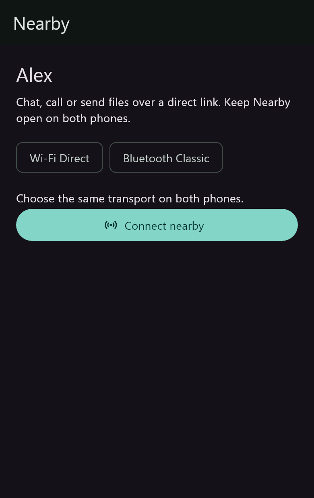
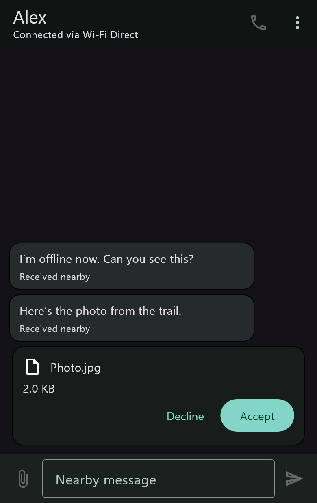

Android and Windows · Early beta
CipherPost
Private messaging, even when you’re offline nearby.
Send encrypted messages, make one-to-one calls, and share files. Android’s Nearby mode also lets two verified contacts chat, call and send files over Wi-Fi Direct or Bluetooth when there’s no internet connection.
Try the beta
On Android, open the APK and follow the system’s installation prompt. On Windows, extract the ZIP and open cipherpost.exe from the extracted folder. After installing, get newer builds through Settings → Check for updates.
See Nearby on Android
Open a verified contact, tap Nearby, and connect on both phones. The app shows which local link is in use. File offers show the name and size before you accept.


Help us test CipherPost
We’re looking for testers with two Android phones or an Android phone and a Windows PC. Try a message in both directions, a call, or a Nearby file transfer with mobile data off. If something goes wrong, tell us the build number, device models, and the last message you saw on screen.
Use sample messages and files during testing. Keep contact details, private keys, and recovery words out of screenshots and reports.
Privacy and beta scope
One-to-one messaging uses libsignal. For regular delivery, relays can temporarily hold encrypted messages and see connection metadata. Nearby traffic goes directly between the phones. The app stores completed Nearby files in encrypted local chat history until you choose to export or delete them.
Android and Windows are available as early builds. Nearby is currently Android-only. An independent security audit and wider device testing are still pending.